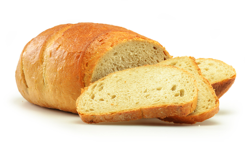

Pão Caseiro

Ingredientes
- - 1 kg de farinha
- - 2 ovos
- - 2 xícaras de leite
- - 1 xícara de água
- - 3/4 de xícara de óleo
- - 6 colheres (sopa)de açúcar
- - 1 colher de chá de sal
- - 1 saquinho de fermento biológico
- PARA PINCELAR:
- - 2 gemas
- - 1 colher (sopa) de açúcar
- - 3 colheres (sopa) de leite
Modo de Preparo
- Coloque em uam vasilha o fermento biologico, o açucar, a farinha e o leite morno e misture
- Pegue a agua e misture com uma xicara de leite e leve para amornar e adicione na vasilha
- Adicione os ovos (batidos) o oleo, o restante do açucar e o sal
- Adicione a farinha aos poucos e vá mexendo
- Deixe a massa descansar até dobrar de tamanho (Se estiver um tempo frio, cubra com plastico filme)
- Em uma bancada, jogue um pouco de farinha e comece a sovar a massa até desgrudar da mão
- Faça bolinhas com a massa e coloque em uma forma (Não esqueça de untar)
- Pincele o pão e coloque para assar por aproximadamente 40 minutos(Varia de forno para forno)
| Tabela Nutricional | %VD(*) | |
|---|---|---|
| Calorias | 196,07Kcal | 9,8% |
| Carboidratos | 34,87g | 11,62% |
| Proteinas | 4,83g | 6,43% |
| Gorduras Totais | 3,81g | 6,93% |
| Gorduras Saturadas | 0,61g | 2,75% |
| Fibra alimentar | 1,58g | 6,3% |
| Sodio | 219,48mg | 9,14% |